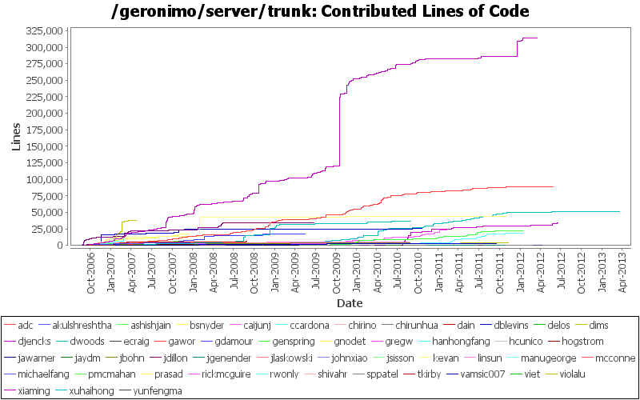
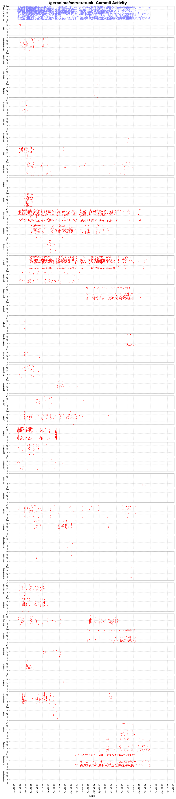
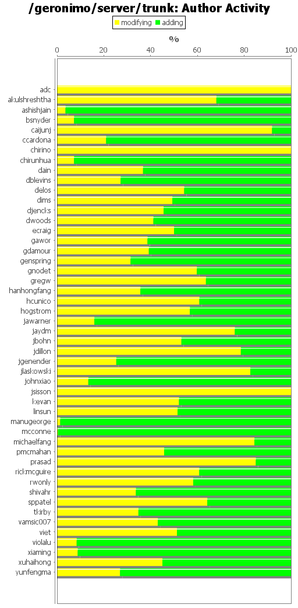
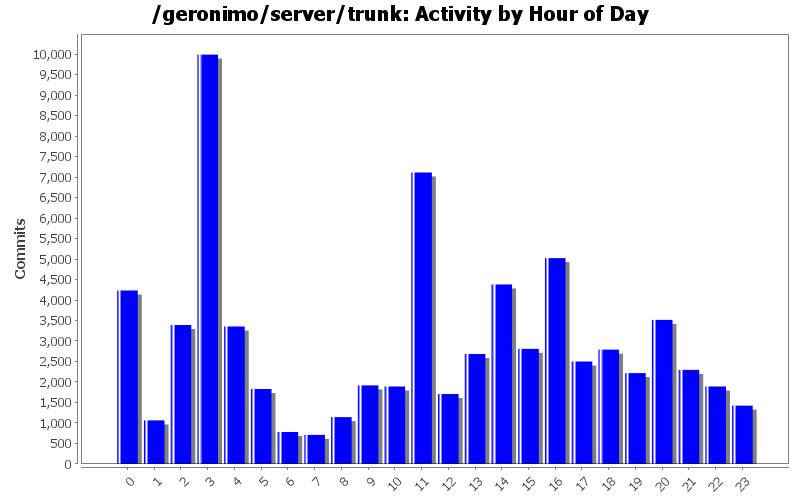

| Author | Author Id | Changes | Lines of Code | Lines per Change |
|---|---|---|---|---|
| Totals | 63363 (100.0%) | 831688 (100.0%) | 13.1 | |
| djencks | djencks | 14685 (23.2%) | 314467 (37.8%) | 21.4 |
| gawor | gawor | 5469 (8.6%) | 89192 (10.7%) | 16.3 |
| xuhaihong | xuhaihong | 3139 (5.0%) | 50687 (6.1%) | 16.1 |
| kevan | kevan | 6424 (10.1%) | 44937 (5.4%) | 6.9 |
| dims | dims | 830 (1.3%) | 38326 (4.6%) | 46.1 |
| dwoods | dwoods | 2683 (4.2%) | 36637 (4.4%) | 13.6 |
| xiaming | xiaming | 1712 (2.7%) | 33830 (4.1%) | 19.7 |
| jdillon | jdillon | 7836 (12.4%) | 33685 (4.1%) | 4.2 |
| vamsic007 | vamsic007 | 1562 (2.5%) | 26059 (3.1%) | 16.6 |
| rickmcguire | rickmcguire | 2939 (4.6%) | 23390 (2.8%) | 7.9 |
| genspring | genspring | 1187 (1.9%) | 21727 (2.6%) | 18.3 |
| rwonly | rwonly | 958 (1.5%) | 18220 (2.2%) | 19.0 |
| gdamour | gdamour | 1202 (1.9%) | 17182 (2.1%) | 14.2 |
| prasad | prasad | 6052 (9.6%) | 16666 (2.0%) | 2.7 |
| ccardona | ccardona | 158 (0.2%) | 10149 (1.2%) | 64.2 |
| pmcmahan | pmcmahan | 621 (1.0%) | 6461 (0.8%) | 10.4 |
| dain | dain | 739 (1.2%) | 6136 (0.7%) | 8.3 |
| shivahr | shivahr | 120 (0.2%) | 5018 (0.6%) | 41.8 |
| linsun | linsun | 378 (0.6%) | 4600 (0.6%) | 12.1 |
| akulshreshtha | akulshreshtha | 619 (1.0%) | 4380 (0.5%) | 7.0 |
| jbohn | jbohn | 535 (0.8%) | 4365 (0.5%) | 8.1 |
| jlaskowski | jlaskowski | 1785 (2.8%) | 4041 (0.5%) | 2.2 |
| violalu | violalu | 152 (0.2%) | 3749 (0.5%) | 24.6 |
| dblevins | dblevins | 238 (0.4%) | 2805 (0.3%) | 11.7 |
| jgenender | jgenender | 267 (0.4%) | 2516 (0.3%) | 9.4 |
| mcconne | mcconne | 31 (0.0%) | 2008 (0.2%) | 64.7 |
| manugeorge | manugeorge | 37 (0.1%) | 1991 (0.2%) | 53.8 |
| jaydm | jaydm | 119 (0.2%) | 1830 (0.2%) | 15.3 |
| ecraig | ecraig | 190 (0.3%) | 1551 (0.2%) | 8.1 |
| hogstrom | hogstrom | 381 (0.6%) | 1253 (0.2%) | 3.2 |
| sppatel | sppatel | 44 (0.1%) | 678 (0.1%) | 15.4 |
| hanhongfang | hanhongfang | 46 (0.1%) | 503 (0.1%) | 10.9 |
| viet | viet | 21 (0.0%) | 483 (0.1%) | 23.0 |
| hcunico | hcunico | 7 (0.0%) | 479 (0.1%) | 68.4 |
| johnxiao | johnxiao | 6 (0.0%) | 346 (0.0%) | 57.6 |
| gnodet | gnodet | 47 (0.1%) | 323 (0.0%) | 6.8 |
| jawarner | jawarner | 27 (0.0%) | 290 (0.0%) | 10.7 |
| michaelfang | michaelfang | 16 (0.0%) | 230 (0.0%) | 14.3 |
| chirunhua | chirunhua | 6 (0.0%) | 179 (0.0%) | 29.8 |
| ashishjain | ashishjain | 12 (0.0%) | 83 (0.0%) | 6.9 |
| bsnyder | bsnyder | 11 (0.0%) | 55 (0.0%) | 5.0 |
| delos | delos | 3 (0.0%) | 45 (0.0%) | 15.0 |
| chirino | chirino | 17 (0.0%) | 36 (0.0%) | 2.1 |
| yunfengma | yunfengma | 2 (0.0%) | 26 (0.0%) | 13.0 |
| tkirby | tkirby | 6 (0.0%) | 23 (0.0%) | 3.8 |
| jsisson | jsisson | 1 (0.0%) | 22 (0.0%) | 22.0 |
| caijunj | caijunj | 26 (0.0%) | 12 (0.0%) | 0.4 |
| gregw | gregw | 5 (0.0%) | 9 (0.0%) | 1.8 |
| adc | adc | 12 (0.0%) | 8 (0.0%) | 0.6 |
| Author | Up to 3/2012 | 4/2012 | 5/2012 | 6/2012 | 7/2012 | 8/2012 | 9/2012 | 10/2012 | 11/2012 | 12/2012 | 1/2013 | 2/2013 | 3/2013 |
|---|---|---|---|---|---|---|---|---|---|---|---|---|---|
| Totals | 826698 (100.0%) | 709 (100.0%) | 3493 (100.0%) | 786 (100.0%) | 0 (-) | 0 (-) | 0 (-) | 0 (-) | 0 (-) | 0 (-) | 0 (-) | 0 (-) | 2 (100.0%) |
| djencks | 314467 (38.0%) | 0 (0.0%) | 0 (0.0%) | 0 (0.0%) | 0 (-) | 0 (-) | 0 (-) | 0 (-) | 0 (-) | 0 (-) | 0 (-) | 0 (-) | 0 (0.0%) |
| gawor | 88921 (10.8%) | 267 (37.7%) | 4 (0.1%) | 0 (0.0%) | 0 (-) | 0 (-) | 0 (-) | 0 (-) | 0 (-) | 0 (-) | 0 (-) | 0 (-) | 0 (0.0%) |
| xuhaihong | 49998 (6.0%) | 55 (7.8%) | 470 (13.5%) | 162 (20.6%) | 0 (-) | 0 (-) | 0 (-) | 0 (-) | 0 (-) | 0 (-) | 0 (-) | 0 (-) | 2 (100.0%) |
| kevan | 44937 (5.4%) | 0 (0.0%) | 0 (0.0%) | 0 (0.0%) | 0 (-) | 0 (-) | 0 (-) | 0 (-) | 0 (-) | 0 (-) | 0 (-) | 0 (-) | 0 (0.0%) |
| dims | 38326 (4.6%) | 0 (0.0%) | 0 (0.0%) | 0 (0.0%) | 0 (-) | 0 (-) | 0 (-) | 0 (-) | 0 (-) | 0 (-) | 0 (-) | 0 (-) | 0 (0.0%) |
| dwoods | 36637 (4.4%) | 0 (0.0%) | 0 (0.0%) | 0 (0.0%) | 0 (-) | 0 (-) | 0 (-) | 0 (-) | 0 (-) | 0 (-) | 0 (-) | 0 (-) | 0 (0.0%) |
| xiaming | 30078 (3.6%) | 109 (15.4%) | 3019 (86.4%) | 624 (79.4%) | 0 (-) | 0 (-) | 0 (-) | 0 (-) | 0 (-) | 0 (-) | 0 (-) | 0 (-) | 0 (0.0%) |
| jdillon | 33685 (4.1%) | 0 (0.0%) | 0 (0.0%) | 0 (0.0%) | 0 (-) | 0 (-) | 0 (-) | 0 (-) | 0 (-) | 0 (-) | 0 (-) | 0 (-) | 0 (0.0%) |
| vamsic007 | 26059 (3.2%) | 0 (0.0%) | 0 (0.0%) | 0 (0.0%) | 0 (-) | 0 (-) | 0 (-) | 0 (-) | 0 (-) | 0 (-) | 0 (-) | 0 (-) | 0 (0.0%) |
| rickmcguire | 23390 (2.8%) | 0 (0.0%) | 0 (0.0%) | 0 (0.0%) | 0 (-) | 0 (-) | 0 (-) | 0 (-) | 0 (-) | 0 (-) | 0 (-) | 0 (-) | 0 (0.0%) |
| genspring | 21727 (2.6%) | 0 (0.0%) | 0 (0.0%) | 0 (0.0%) | 0 (-) | 0 (-) | 0 (-) | 0 (-) | 0 (-) | 0 (-) | 0 (-) | 0 (-) | 0 (0.0%) |
| rwonly | 18220 (2.2%) | 0 (0.0%) | 0 (0.0%) | 0 (0.0%) | 0 (-) | 0 (-) | 0 (-) | 0 (-) | 0 (-) | 0 (-) | 0 (-) | 0 (-) | 0 (0.0%) |
| gdamour | 17182 (2.1%) | 0 (0.0%) | 0 (0.0%) | 0 (0.0%) | 0 (-) | 0 (-) | 0 (-) | 0 (-) | 0 (-) | 0 (-) | 0 (-) | 0 (-) | 0 (0.0%) |
| prasad | 16666 (2.0%) | 0 (0.0%) | 0 (0.0%) | 0 (0.0%) | 0 (-) | 0 (-) | 0 (-) | 0 (-) | 0 (-) | 0 (-) | 0 (-) | 0 (-) | 0 (0.0%) |
| ccardona | 10149 (1.2%) | 0 (0.0%) | 0 (0.0%) | 0 (0.0%) | 0 (-) | 0 (-) | 0 (-) | 0 (-) | 0 (-) | 0 (-) | 0 (-) | 0 (-) | 0 (0.0%) |
| pmcmahan | 6461 (0.8%) | 0 (0.0%) | 0 (0.0%) | 0 (0.0%) | 0 (-) | 0 (-) | 0 (-) | 0 (-) | 0 (-) | 0 (-) | 0 (-) | 0 (-) | 0 (0.0%) |
| dain | 6136 (0.7%) | 0 (0.0%) | 0 (0.0%) | 0 (0.0%) | 0 (-) | 0 (-) | 0 (-) | 0 (-) | 0 (-) | 0 (-) | 0 (-) | 0 (-) | 0 (0.0%) |
| shivahr | 5018 (0.6%) | 0 (0.0%) | 0 (0.0%) | 0 (0.0%) | 0 (-) | 0 (-) | 0 (-) | 0 (-) | 0 (-) | 0 (-) | 0 (-) | 0 (-) | 0 (0.0%) |
| linsun | 4600 (0.6%) | 0 (0.0%) | 0 (0.0%) | 0 (0.0%) | 0 (-) | 0 (-) | 0 (-) | 0 (-) | 0 (-) | 0 (-) | 0 (-) | 0 (-) | 0 (0.0%) |
| akulshreshtha | 4380 (0.5%) | 0 (0.0%) | 0 (0.0%) | 0 (0.0%) | 0 (-) | 0 (-) | 0 (-) | 0 (-) | 0 (-) | 0 (-) | 0 (-) | 0 (-) | 0 (0.0%) |
| jbohn | 4365 (0.5%) | 0 (0.0%) | 0 (0.0%) | 0 (0.0%) | 0 (-) | 0 (-) | 0 (-) | 0 (-) | 0 (-) | 0 (-) | 0 (-) | 0 (-) | 0 (0.0%) |
| jlaskowski | 4041 (0.5%) | 0 (0.0%) | 0 (0.0%) | 0 (0.0%) | 0 (-) | 0 (-) | 0 (-) | 0 (-) | 0 (-) | 0 (-) | 0 (-) | 0 (-) | 0 (0.0%) |
| violalu | 3749 (0.5%) | 0 (0.0%) | 0 (0.0%) | 0 (0.0%) | 0 (-) | 0 (-) | 0 (-) | 0 (-) | 0 (-) | 0 (-) | 0 (-) | 0 (-) | 0 (0.0%) |
| dblevins | 2805 (0.3%) | 0 (0.0%) | 0 (0.0%) | 0 (0.0%) | 0 (-) | 0 (-) | 0 (-) | 0 (-) | 0 (-) | 0 (-) | 0 (-) | 0 (-) | 0 (0.0%) |
| jgenender | 2516 (0.3%) | 0 (0.0%) | 0 (0.0%) | 0 (0.0%) | 0 (-) | 0 (-) | 0 (-) | 0 (-) | 0 (-) | 0 (-) | 0 (-) | 0 (-) | 0 (0.0%) |
| mcconne | 2008 (0.2%) | 0 (0.0%) | 0 (0.0%) | 0 (0.0%) | 0 (-) | 0 (-) | 0 (-) | 0 (-) | 0 (-) | 0 (-) | 0 (-) | 0 (-) | 0 (0.0%) |
| manugeorge | 1991 (0.2%) | 0 (0.0%) | 0 (0.0%) | 0 (0.0%) | 0 (-) | 0 (-) | 0 (-) | 0 (-) | 0 (-) | 0 (-) | 0 (-) | 0 (-) | 0 (0.0%) |
| jaydm | 1830 (0.2%) | 0 (0.0%) | 0 (0.0%) | 0 (0.0%) | 0 (-) | 0 (-) | 0 (-) | 0 (-) | 0 (-) | 0 (-) | 0 (-) | 0 (-) | 0 (0.0%) |
| ecraig | 1551 (0.2%) | 0 (0.0%) | 0 (0.0%) | 0 (0.0%) | 0 (-) | 0 (-) | 0 (-) | 0 (-) | 0 (-) | 0 (-) | 0 (-) | 0 (-) | 0 (0.0%) |
| hogstrom | 1253 (0.2%) | 0 (0.0%) | 0 (0.0%) | 0 (0.0%) | 0 (-) | 0 (-) | 0 (-) | 0 (-) | 0 (-) | 0 (-) | 0 (-) | 0 (-) | 0 (0.0%) |
| sppatel | 678 (0.1%) | 0 (0.0%) | 0 (0.0%) | 0 (0.0%) | 0 (-) | 0 (-) | 0 (-) | 0 (-) | 0 (-) | 0 (-) | 0 (-) | 0 (-) | 0 (0.0%) |
| hanhongfang | 503 (0.1%) | 0 (0.0%) | 0 (0.0%) | 0 (0.0%) | 0 (-) | 0 (-) | 0 (-) | 0 (-) | 0 (-) | 0 (-) | 0 (-) | 0 (-) | 0 (0.0%) |
| viet | 483 (0.1%) | 0 (0.0%) | 0 (0.0%) | 0 (0.0%) | 0 (-) | 0 (-) | 0 (-) | 0 (-) | 0 (-) | 0 (-) | 0 (-) | 0 (-) | 0 (0.0%) |
| hcunico | 479 (0.1%) | 0 (0.0%) | 0 (0.0%) | 0 (0.0%) | 0 (-) | 0 (-) | 0 (-) | 0 (-) | 0 (-) | 0 (-) | 0 (-) | 0 (-) | 0 (0.0%) |
| johnxiao | 68 (0.0%) | 278 (39.2%) | 0 (0.0%) | 0 (0.0%) | 0 (-) | 0 (-) | 0 (-) | 0 (-) | 0 (-) | 0 (-) | 0 (-) | 0 (-) | 0 (0.0%) |
| gnodet | 323 (0.0%) | 0 (0.0%) | 0 (0.0%) | 0 (0.0%) | 0 (-) | 0 (-) | 0 (-) | 0 (-) | 0 (-) | 0 (-) | 0 (-) | 0 (-) | 0 (0.0%) |
| jawarner | 290 (0.0%) | 0 (0.0%) | 0 (0.0%) | 0 (0.0%) | 0 (-) | 0 (-) | 0 (-) | 0 (-) | 0 (-) | 0 (-) | 0 (-) | 0 (-) | 0 (0.0%) |
| michaelfang | 230 (0.0%) | 0 (0.0%) | 0 (0.0%) | 0 (0.0%) | 0 (-) | 0 (-) | 0 (-) | 0 (-) | 0 (-) | 0 (-) | 0 (-) | 0 (-) | 0 (0.0%) |
| chirunhua | 179 (0.0%) | 0 (0.0%) | 0 (0.0%) | 0 (0.0%) | 0 (-) | 0 (-) | 0 (-) | 0 (-) | 0 (-) | 0 (-) | 0 (-) | 0 (-) | 0 (0.0%) |
| ashishjain | 83 (0.0%) | 0 (0.0%) | 0 (0.0%) | 0 (0.0%) | 0 (-) | 0 (-) | 0 (-) | 0 (-) | 0 (-) | 0 (-) | 0 (-) | 0 (-) | 0 (0.0%) |
| bsnyder | 55 (0.0%) | 0 (0.0%) | 0 (0.0%) | 0 (0.0%) | 0 (-) | 0 (-) | 0 (-) | 0 (-) | 0 (-) | 0 (-) | 0 (-) | 0 (-) | 0 (0.0%) |
| delos | 45 (0.0%) | 0 (0.0%) | 0 (0.0%) | 0 (0.0%) | 0 (-) | 0 (-) | 0 (-) | 0 (-) | 0 (-) | 0 (-) | 0 (-) | 0 (-) | 0 (0.0%) |
| chirino | 36 (0.0%) | 0 (0.0%) | 0 (0.0%) | 0 (0.0%) | 0 (-) | 0 (-) | 0 (-) | 0 (-) | 0 (-) | 0 (-) | 0 (-) | 0 (-) | 0 (0.0%) |
| yunfengma | 26 (0.0%) | 0 (0.0%) | 0 (0.0%) | 0 (0.0%) | 0 (-) | 0 (-) | 0 (-) | 0 (-) | 0 (-) | 0 (-) | 0 (-) | 0 (-) | 0 (0.0%) |
| tkirby | 23 (0.0%) | 0 (0.0%) | 0 (0.0%) | 0 (0.0%) | 0 (-) | 0 (-) | 0 (-) | 0 (-) | 0 (-) | 0 (-) | 0 (-) | 0 (-) | 0 (0.0%) |
| jsisson | 22 (0.0%) | 0 (0.0%) | 0 (0.0%) | 0 (0.0%) | 0 (-) | 0 (-) | 0 (-) | 0 (-) | 0 (-) | 0 (-) | 0 (-) | 0 (-) | 0 (0.0%) |
| caijunj | 12 (0.0%) | 0 (0.0%) | 0 (0.0%) | 0 (0.0%) | 0 (-) | 0 (-) | 0 (-) | 0 (-) | 0 (-) | 0 (-) | 0 (-) | 0 (-) | 0 (0.0%) |
| gregw | 9 (0.0%) | 0 (0.0%) | 0 (0.0%) | 0 (0.0%) | 0 (-) | 0 (-) | 0 (-) | 0 (-) | 0 (-) | 0 (-) | 0 (-) | 0 (-) | 0 (0.0%) |
| adc | 8 (0.0%) | 0 (0.0%) | 0 (0.0%) | 0 (0.0%) | 0 (-) | 0 (-) | 0 (-) | 0 (-) | 0 (-) | 0 (-) | 0 (-) | 0 (-) | 0 (0.0%) |



